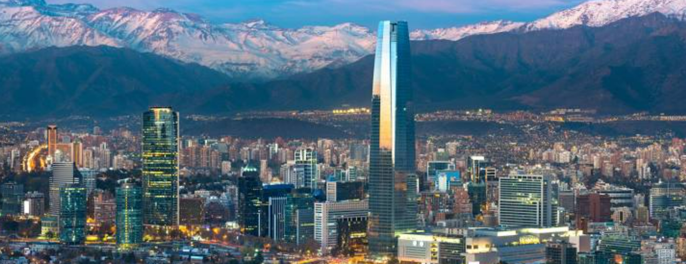

Regiones de Chile

Osorno
Valdivia
San Pedro
Temuco
Punta
Arenas
Mapa Nacional
Mapa Regional
Puntos de Interés
Clima Actualizado
Ciudades Destacadas
Sitios Turisticos
Indicadores Sociales
Chile, ubicado en la costa oeste de América del Sur, fue habitado por diversas culturas
indígenas antes de la llegada de los españoles en 1536. El país logró su independencia de España en 1818,
liderado por figuras como Bernardo O'Higgins. A lo largo de los siglos, Chile ha enfrentado desafíos y triunfos,
desde el establecimiento de la república hasta su desarrollo económico. Hoy, Chile es conocido por su
estabilidad política, diversidad cultural y paisajes naturales que incluyen desiertos, montañas y costas.